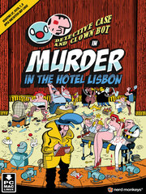

Detective Case and Clown Bot in: Murder in the Hotel Lisbon
Details
|  | |
| Playtime | Not Played |
| Last Activity | Never |
| Added | 9/2/2024 19:36:05 |
| Modified | 9/2/2024 21:32:04 |
| Completion Status | Not Played |
| Library | Steam |
| Source | Steam |
| Platform | PC (Windows) |
| Release Date | 12/5/2013 |
| Community Score | 80 |
| Critic Score | |
| User Score | |
| Genre | Adventure Indie Point-and-click Puzzle |
| Developer | Nerd Monkeys |
| Publisher | Nerd Monkeys |
| Feature | Single Player |
| Links | Official Steam Discord Itch |
| Tag | |
Description
Detective Case and Clown Bot in: Murder in the Hotel Lisbon
Murder in the Hotel Lisbon is a videogame inspired by the classic point and click adventures from the 80’s and 90’s. It adopts these eras distinctive design and it is built using only the pixel art technique. The game itself runs at a native resolution of 256x192, the same resolution used by the old ZX Spectrum 48k and most recently by the Nintendo DS.

Synopsis:
A strange murder has occurred in the Hotel Lisbon, a man committed suicide with 14 stabs to the back while at the same time he peacefully drank his coffee.
This case with contradictory facts was too complex for Policeman Garcia to solve, so he decided to hire the only detective duo in town capable of solving it: the mythical Detective Case and the unmistakable Clown Bot.
Together, they will solve a network of love relations so complex and so intricate, that it would take at least 14 clairvoyants, 5 apocalyptic sect prophets who can predict the end of the world and 3 of those gypsies that can read the palm of your hand just to guess the final outcome.

Characters:
With the mythical Detective Case, also known as the world worst detective, a man so rough and rude that his witnesses would rather be run over by a slow moving freight train than to be questioned by him.
And the hilarious Clown Bot who, although he works as a Detective Case’s sidekick, he hopes in reality that one day he will get a job as a circus clown. Unfortunately, and no matter how many applications he sends, no circus will ever accept a clown that is afraid of children. He never sleeps, so besides working by day as a sidekick, he also works by night as a stand-up comedian in a local bar. People say that he is a joke machine.

Trading cards
8 awesome and cool Steam Trading Cards!
Collect them all!

Game music
Throughout the game you will hear over 20 different tracks of orchestral music composed and recorded specifically for the game.
All these tracks were recorded on studio with a 10-member band composed of friends and colleagues. All of them brought their soul and heart to these recordings and the results are absolutely AWESOME!
Jazz music
Inside the GAF Bar, a 4-man band plays some cool Jazz.
The character at the Piano is actually Filipe Melo who is doing a cameo and allowed us the rights to use some songs recorded previously with John Ellis, Romeu Tristão and João Pereira! BAM!
Fado music
To top it all, inside the Noitadas Restaurante we have a Portuguese Fado trio ready to entertain the guests. The song they sing was also recorded on studio. It is called "A Caldeirada" and it was originally written for famous Fado singer Amália Rodrigues.
SUAVE!

Murder in the Hotel Lisbon is a videogame inspired by the classic point and click adventures from the 80’s and 90’s. It adopts these eras distinctive design and it is built using only the pixel art technique. The game itself runs at a native resolution of 256x192, the same resolution used by the old ZX Spectrum 48k and most recently by the Nintendo DS.
Synopsis:
A strange murder has occurred in the Hotel Lisbon, a man committed suicide with 14 stabs to the back while at the same time he peacefully drank his coffee.
This case with contradictory facts was too complex for Policeman Garcia to solve, so he decided to hire the only detective duo in town capable of solving it: the mythical Detective Case and the unmistakable Clown Bot.
Together, they will solve a network of love relations so complex and so intricate, that it would take at least 14 clairvoyants, 5 apocalyptic sect prophets who can predict the end of the world and 3 of those gypsies that can read the palm of your hand just to guess the final outcome.
Characters:
With the mythical Detective Case, also known as the world worst detective, a man so rough and rude that his witnesses would rather be run over by a slow moving freight train than to be questioned by him.
And the hilarious Clown Bot who, although he works as a Detective Case’s sidekick, he hopes in reality that one day he will get a job as a circus clown. Unfortunately, and no matter how many applications he sends, no circus will ever accept a clown that is afraid of children. He never sleeps, so besides working by day as a sidekick, he also works by night as a stand-up comedian in a local bar. People say that he is a joke machine.
Key features
Murder in the Hotel Lisbon has THOUSANDS of key features!- A point and click graphic adventure game.
- Play as Detective Case and Clown Bot.
- Search for clues and interview witnesses.
- Take a rest, have a nap.
- Solve the murder in the Hotel Lisbon.
- Includes 3 additional cases.
Steam release:
The release on the Steam platform includes many Steam updates and Steam extra features only found here on Steam! (wow!)- Updated Steam version to 1.02 with multiple bug fixes and Steam enhancements.
- New Steam animations for Steam Case, Steam Bot, Steam Garcia and many Steam more.
- Support for Steam achievements with a proper real trophy shelf on Case's office.
- Awesome and cool Steam Trading Cards!
- Taxi is now properly Steam animated.
- Revised Steam English version.
- Steam!
Trading cards
8 awesome and cool Steam Trading Cards!
Collect them all!
Original soundtrack
Murder in the Hotel Lisbon may be low res and retro on the visual side, but we made sure that on the audio side your ears would rejoice with a complete original soundtrack. Composed of an orchestral band, a jazz band and a typical Portuguese Fado trio, the musical landscape contrasts beautifully with the colorful graphics.Game music
Throughout the game you will hear over 20 different tracks of orchestral music composed and recorded specifically for the game.
All these tracks were recorded on studio with a 10-member band composed of friends and colleagues. All of them brought their soul and heart to these recordings and the results are absolutely AWESOME!
Jazz music
Inside the GAF Bar, a 4-man band plays some cool Jazz.
The character at the Piano is actually Filipe Melo who is doing a cameo and allowed us the rights to use some songs recorded previously with John Ellis, Romeu Tristão and João Pereira! BAM!
Fado music
To top it all, inside the Noitadas Restaurante we have a Portuguese Fado trio ready to entertain the guests. The song they sing was also recorded on studio. It is called "A Caldeirada" and it was originally written for famous Fado singer Amália Rodrigues.
SUAVE!